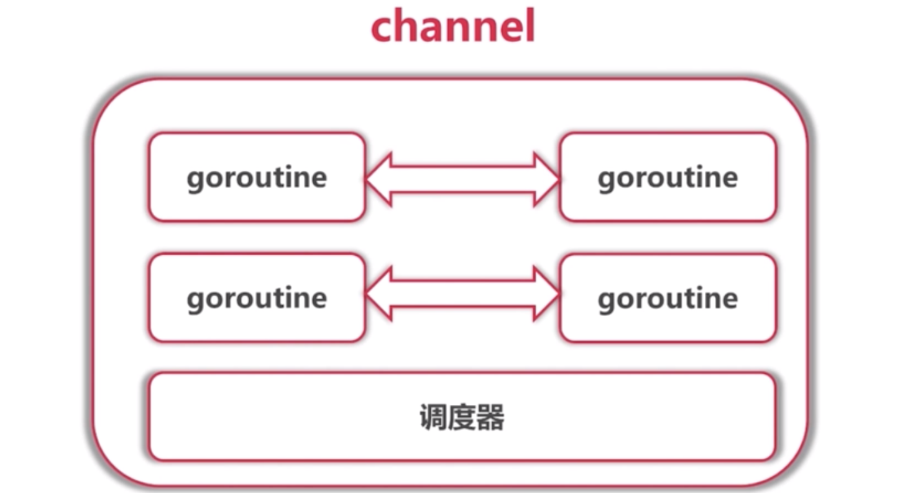

Channel主要被用来在多个Goroutione之间传递数据，并且还会保证其过程的同步。总是遵循先入先出（First In First Out）的规则，保证收发数据的顺序

Go并发模型
- 多线程共享内存。其实就是Java或者C++等语言中的多线程开发
- CSP（communicating sequential processes）并发模型。Go语言特有
CSP并发模型是在1970年左右提出的概念，属于比较新的概念，不同于传统的多线程通过共享内存来通信，CSP讲究的是”以通信的方式来共享内存”。
请记住下面这句话： DO NOT COMMUNICATE BY SHARING MEMORY; INSTEAD, SHARE MEMORY BY COMMUNICATING. “不要以共享内存的方式来通信，相反，要通过通信来共享内存。”
普通的线程并发模型，像Java、C++、Python，他们线程间通信都是通过共享内存的方式来进行的。非常典型的方式就是在访问共享数据（例如数组、Map、或者某个结构体或对象）的时候，通过锁来限制，因此，在很多时候，衍生出一种方便操作的数据结构，叫做”线程安全的数据结构”。例如Java提供的包”java.util.concurrent”中的数据结构。Go中也实现了传统的线程并发模型
Go的CSP并发模型，是通过goroutine和channel来实现的。
goroutine是Go语言中并发的执行单位。有点抽象，其实就是和传统概念上的”线程”类似，可以理解为”线程”channel是Go语言中各个并发结构体(goroutine)之前的通信机制。 通俗的讲，就是各个goroutine之间通信的”管道”，有点类似于Linux中的管道
开启一个goroutine的方式非常简单
go func()通信机制channel也很方便，传数据用channel <- data，取数据用<-channel。在通信过程中，传数据channel <- data和取数据<-channel必然会成对出现，因为这边传，那边取，两个goroutine之间才会实现通信。而且不管传还是取，必阻塞，直到另外的goroutine传或者取为止。
import (
"time"
"fmt"
)
func worker(id int, c chan int) {
// for true {
// n, ok := <- c
// if !ok {
// break
// }
// fmt.Printf("Worker %d received %d\n", id, n)
// }
for n := range c {
fmt.Printf("Worker %d received %d\n", id, n)
}
}
func createWorker(id int) chan<- int {
c := make(chan int)
go worker(id, c)
return c
}
func chanDemo() {
var channels [10]chan<- int
for i := 0; i < 10; i++ {
channels[i] = createWorker(i)
}
for i := 0; i < 10; i++ {
channels[i] <- i
}
time.Sleep(time.Millisecond)
}
func bufferedChannel() {
c := make(chan int, 3)
go worker(0, c)
c <- 1
c <- 2
c <- 3
c <- 4
time.Sleep(time.Millisecond)
}
func closeChannel() {
c := make(chan int, 3)
go worker(0, c)
c <- 1
c <- 2
c <- 3
c <- 4
close(c)
time.Sleep(time.Millisecond)
}
func main() {
fmt.Println("Channel as first-class citizen")
chanDemo()
fmt.Println("Buffered channel")
bufferedChannel()
fmt.Println("Channel close and range")
closeChannel()
}chan 是关键字，代表要创建一个通道
c := make(chan int)，声明了一个无缓冲的阻塞式的通道
c := make(chan int, 3)，声明了一个带缓冲的阻塞式的通道
close©，chanel创建出来不一定需要close，如果输入的数据有明确的结尾可以加入close，并且永远是发送方close，通知接收方没有新的数据需要发送。
接收方判断发送方close
- n, ok := <- c
- for n := range c
同步等待goroutine任务结束
import (
"fmt"
"sync"
)
func doWorker(id int, w worker) {
for n := range w.in {
fmt.Printf("Worker %d received %d\n", id, n)
w.done()
}
}
type worker struct {
in chan int
done func()
}
func createWorker(id int, wg *sync.WaitGroup) worker {
w := worker{
in: make(chan int),
done: func() {
wg.Done()
},
}
go doWorker(id, w)
return w
}
func chanDemo() {
var workers [10]worker
var wg sync.WaitGroup
for i := 0; i < 10; i++ {
workers[i] = createWorker(i, &wg)
}
wg.Add(20)
for i, worker := range workers {
worker.in <- i
}
for i, worker := range workers {
worker.in <- i + 10
}
wg.Wait()
}
func main() {
chanDemo()
}在代码中生硬的使用
time.Sleep肯定是不合适的，Go语言中可以使用sync.WaitGroup来实现并发任务的同步。sync.WaitGroup有以下几个方法：
方法名 功能 (wg * WaitGroup) Add(delta int) 计数器+delta (wg *WaitGroup) Done() 计数器-1 (wg *WaitGroup) Wait() 阻塞直到计数器变为0
sync.WaitGroup内部维护着一个计数器，计数器的值可以增加和减少。例如当我们启动了N 个并发任务时，就将计数器值增加N。每个任务完成时通过调用Done()方法将计数器减1。通过调用Wait()来等待并发任务执行完，当计数器值为0时，表示所有并发任务已经完成。注意
sync.WaitGroup是一个结构体，传递的时候要传递指针